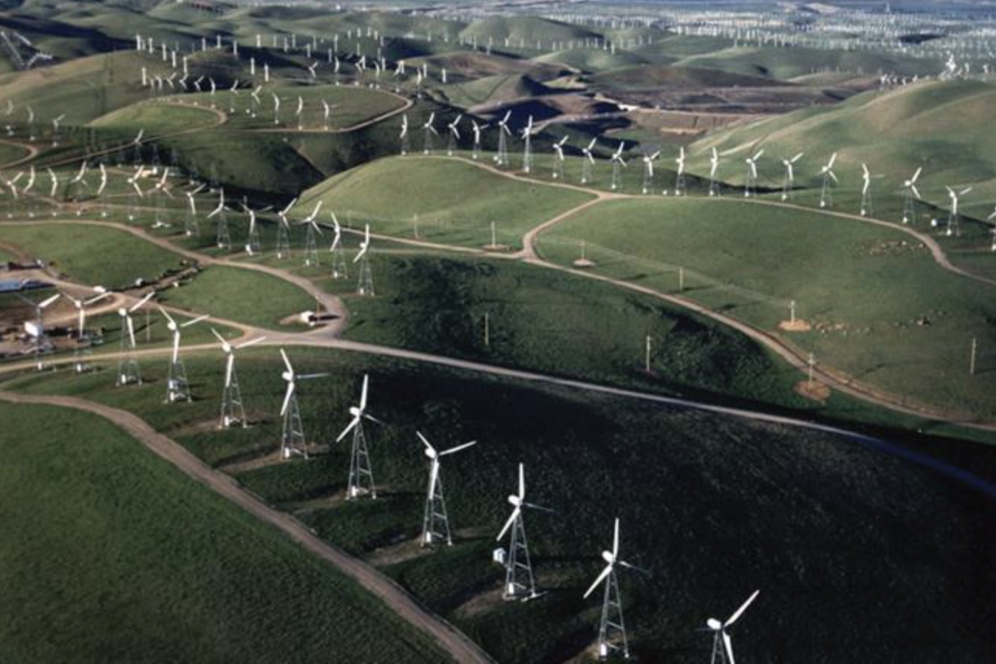
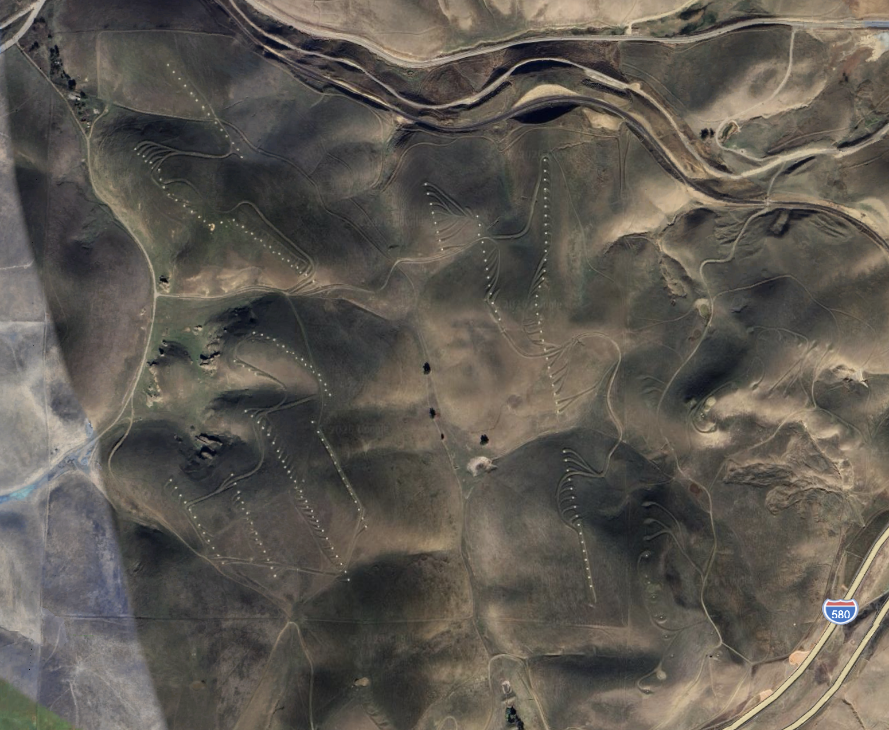
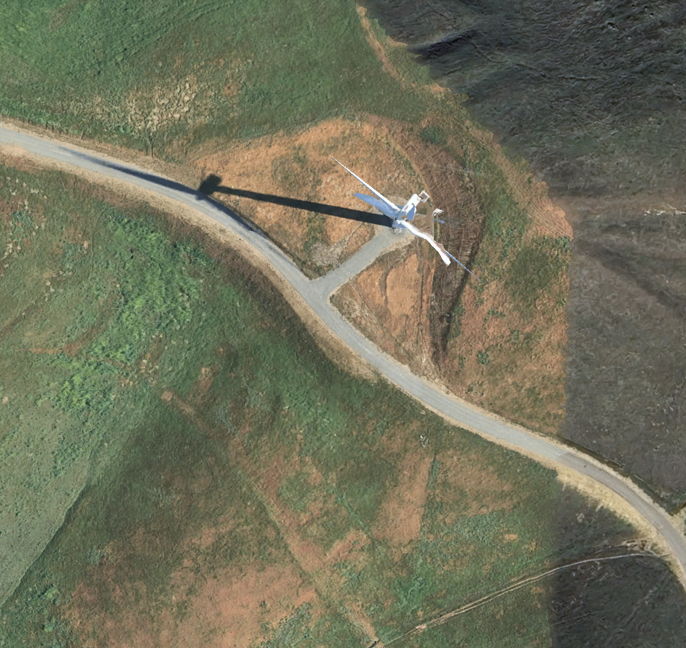
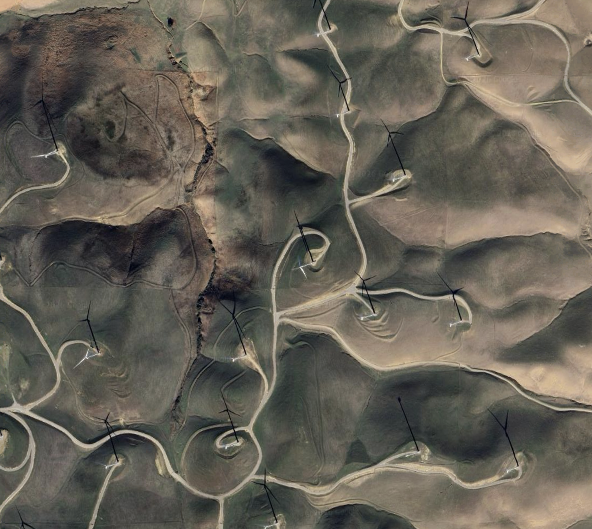
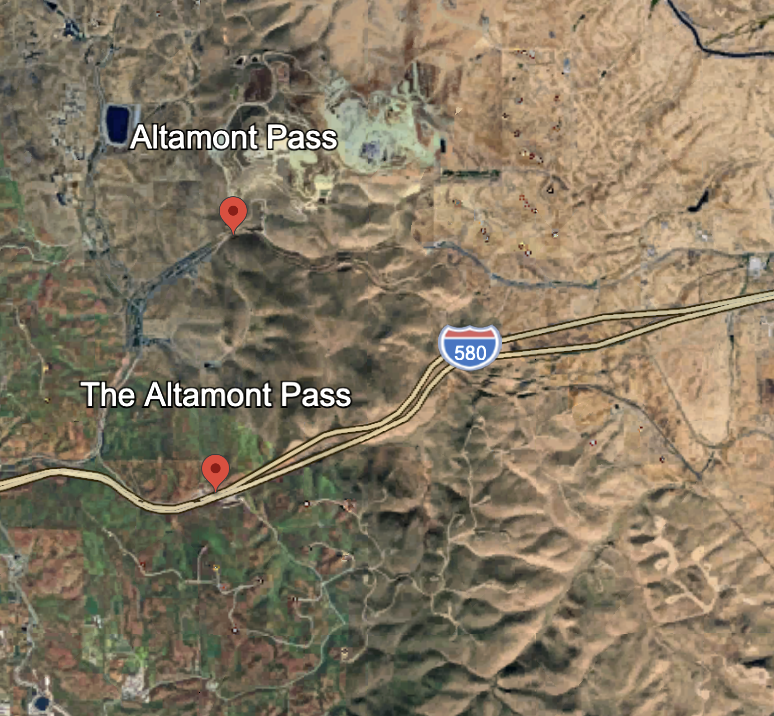
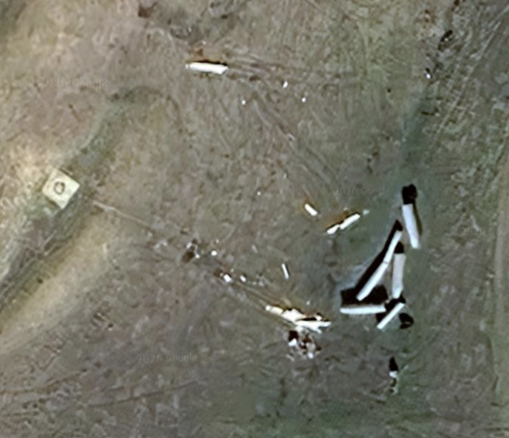
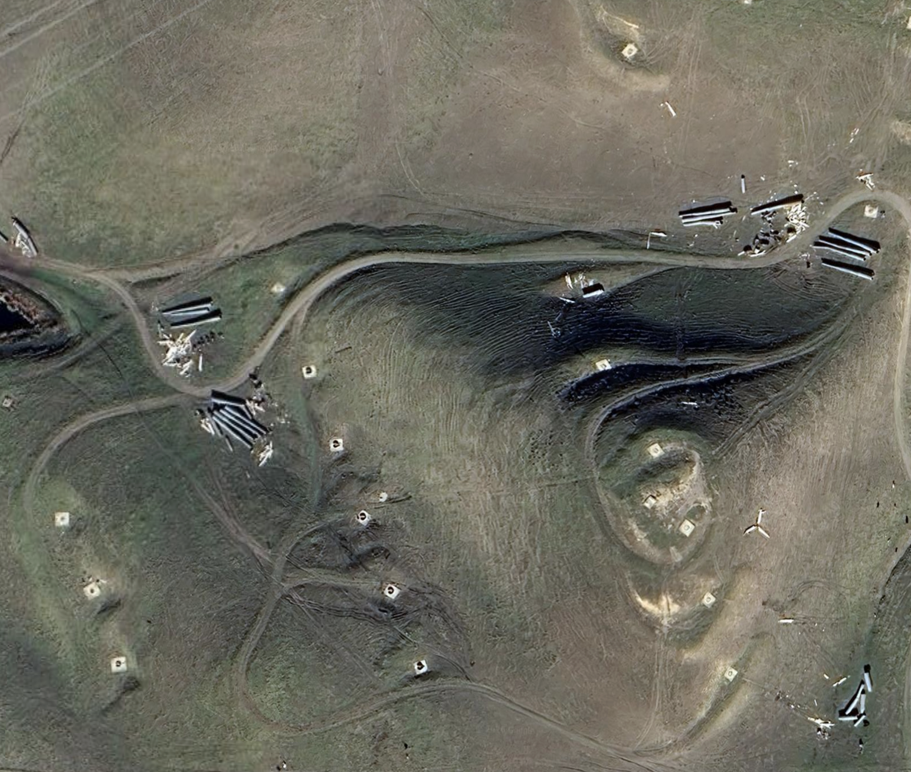
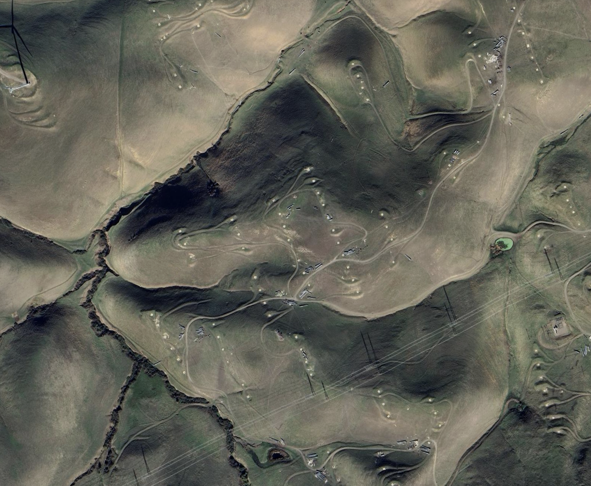
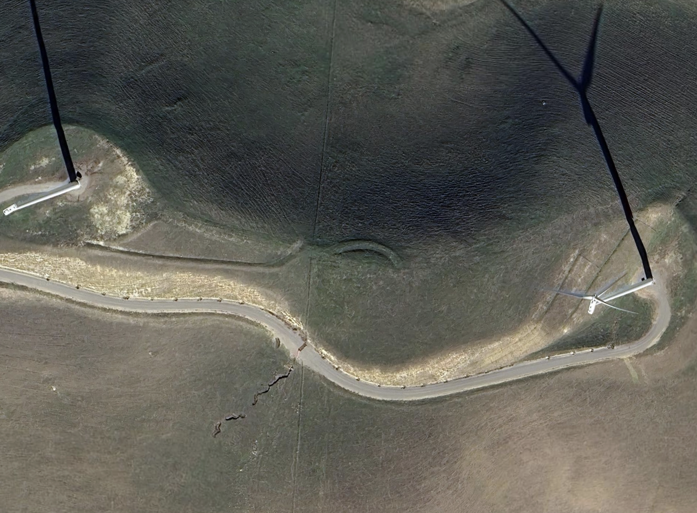

Address
Location: Altamont Pass, near Livermore, California
Introduction
Since the 1970s, the Shortage of oil has become a serious problem to the U.S.
economy. Altamont Pass wind farm is one of the solutions, it is enough to power
about 250,000 households. At its peak, Altamont Pass wind farm produced roughly
half of all wind-generated electricity in the world.
The first windfarms appeared in 1981, on the Altamont hills next to the I-580 freeway. The I-580 freeway connects the Bay Area and southern San Joaquin Valley together.
By 1985, there were 26 different windfarms located on the Altamont hills. Those windfarms become a scenic view for the daily commuters visiting on the road.
Environmental issue
Wind turbines can have negative impacts on wildlife. They may pose dangers to
various animals, especially birds and bats. Each year, there it about 4,000 birds
be kills by the small turbines. This includes more than 40 different species.
The primary reason why those turbines pose a danger to the birds is because
the hill of Altamont Pass lies on the migration routes of birds. In addition,
many turbines operate within the same height used by birds during flight.
This significantly increases the risk of collisions happening with the turbine.

Current Measures
In 2009, the Audubon Society, Californians for Renewable Energy and NextEra
Energy Resources made an agreement, 15,000 old turbines have been abandoned and
removed. A new type of turbine is much larger and stronger than the old one.
Those numerous small turbines have been determined as obsolete. The new type of turbine
can be 400 meters tall and this height no longer poses a threat to birds.
Other than that, there are also 2.5 million dollars spent for raptor habitat restoration.
No reliable data are currently available regarding bird mortality during these two years.
However, it is foreseeable that these wind turbines are gradually becoming part
of the local ecosystem rather than a type of danger.
| Name | Capacity (MW) | Commissioned |
|---|---|---|
| Golden Hills North | 46 | Oct. 2017 |
| Golden Hills | 86 | Dec. 2015 |
| Vasco Winds | 78.2 | Dec. 2011 |
| Buena Vista Energy | 38 | Dec. 2006 |
| Diablo Winds | 18 | Jan. 2005 |
Images from satellites







